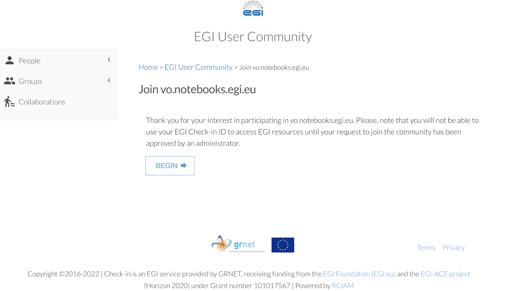

How to connect your pangeo-eosc object storage using EGI check-in to your ‘bucket’ at pangeo-eosc-jupyter
Contents
How to connect your pangeo-eosc object storage using EGI check-in to your ‘bucket’ at pangeo-eosc-jupyter#
We will need different ‘token’ ‘key’ to proceed with object storage. Here are the list of token and keys we’ll create in this page.
OIDC_ACCESS_TOKEN
openstack token
aws_access_key_id
aws_secret_access_key
Request read/write access to cloud resource#
sign up for an EGI account (Production EGI instance:aai) by clicking on : https://aai.egi.eu/registry/co_petitions/start/coef:2.
Enroll to the vo.pangeo.egi.eu VO by clicking on https://aai.egi.eu/registry/co_petitions/start/coef:386. This will take you to the website shown on the Figure  and then to
 . For the latter e.g. when asking to join the EGI VO notebook, in the “statement for purpose” simply write “To execute Jupyter notebooks during eScience Course as student (or mentor)”. Review and agree on the policy and click on “Submit”.
. For the latter e.g. when asking to join the EGI VO notebook, in the “statement for purpose” simply write “To execute Jupyter notebooks during eScience Course as student (or mentor)”. Review and agree on the policy and click on “Submit”.Before going to next step, restart your web browser.
Setup your command line enviroment#
First install required Python packages#
Open a Terminal in your JupyterLab and create a new environment called egi:
conda create -n egi python jq --yes
conda activate egi
pip install fedcloudclient
See more information about fedcloudclient in: https://fedcloudclient.fedcloud.eu/. Installing fedcloudclient will also install required openstackclient.
You should be able to issue:
fedcloud token check
But you don’t have a token yet… So let’s get your access token from EGI Check-in.
Get your access token from EGI Check-In#
Go to https://aai.egi.eu/token/ to obtain your access token. Copy your access token, and then set it:
export OIDC_ACCESS_TOKEN=<your_token>
fedcloud token check
Last command should return a valid token.
Use Openstack to access escience project storage#
We need to use openstack commands to access the escience project storage.
Please configure these environment variables:
export OS_AUTH_URL=https://identity.cloud.muni.cz/v3
export OS_AUTH_TYPE=v3oidcaccesstoken
export OS_PROTOCOL=openid
export OS_IDENTITY_PROVIDER=egi.eu
export OS_ACCESS_TOKEN=$OIDC_ACCESS_TOKEN
export OS_STORAGE_URL=https://object-store.cloud.muni.cz/swift/v1
Then we can configure the project ID accordingly. For the eScience workshop:
# eScience workshop:
# https://www.aces.su.se/research/projects/escience-tools-in-climate-science-linking-observations-with-modelling/
export OS_PROJECT_ID=5e5a45e153d3424997fda0c4fd21a21f
Then the following command should work:
openstack container list
Retrieve Openstack token for Swift#
# get OS_AUTH_TOKEN
$ openstack token issue -c id -f value
You’ll need OS_AUTH_TOKEN and OS_STORAGE_URL in order to interact with Swift using Zarr.
Connect your environment with pangeo-eosc object storage.#
Retrieve S3 credentials#
CESNET provides the following self-service to get S3 credentials: https://docs.cloud.muni.cz/cloud/advanced-features/#s3-credentials.
You need a pair of Access and Secret keys (aws_access_key_id and aws_secret_access_key)
in order to have read-write access to pangeo-eosc object store space from your enviroment
through AWS S3 interface.
Use the following command to see if you already have those keys or not:
openstack ec2 credentials list
If you have nothing listed, then type the following command in order to create them:
openstack ec2 credentials create
Then list the credentials created by issuing the credentials list command :
openstack ec2 credentials list
This will provide access and secret keys that you need to interact with the escience object storage from the Jupyter Notebook. The endpoint URL is: https://object-store.cloud.muni.cz/.
This will provide you aws_access_key_id and aws_secret_access_key
+----------------------------------+----------------------------------+----------------------------------+------------------------------------------------------------------+
| Access | Secret | Project ID | User ID |
+----------------------------------+----------------------------------+----------------------------------+------------------------------------------------------------------+
| x1xx | x2xx | x3xxxxxx | x4xxxxxx |
+----------------------------------+----------------------------------+----------------------------------+------------------------------------------------------------------+
Copy the values at x1xx and x2xx and past them instead of x1xx and x2xx in the next command:
aws configure set aws_access_key_id x1xx
aws configure set aws_secret_access_key x2xx
Be really careful of what you do with your credentials, e.g. avoid living them into notebooks!!!